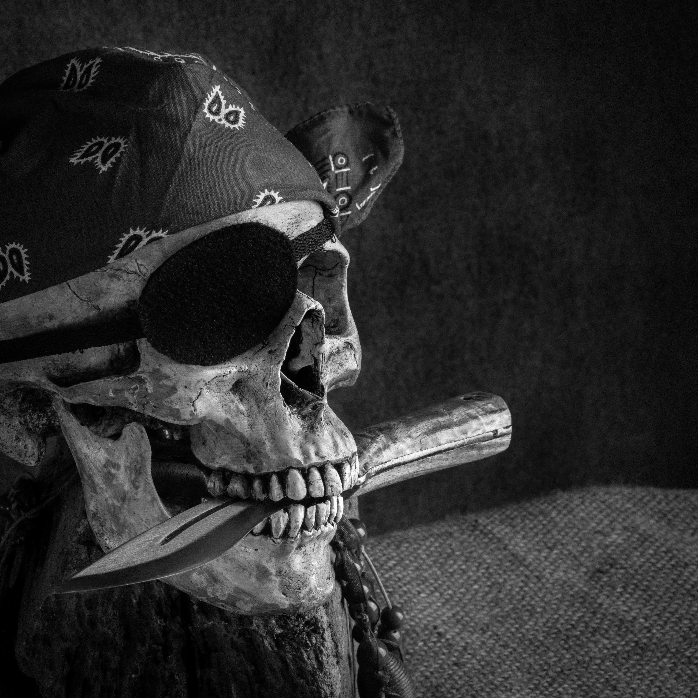

Episodes
RMS Empress of Ireland: Lost in the Mist
Episode 6
06/11/2023

In this episode, we dive into the tragic yet compelling tale of the RMS Empress of Ireland. Once a
regal passenger liner traversing the Atlantic, the Empress met her devastating fate in the early hours of May 29, 1914.
Carrying the hopes and dreams of over a thousand souls, this maritime tragedy remains one of the deadliest in history. Join us as we explore the chaos and courage that defined that harrowing night through survivor accounts and historical records.
Join us to uncover the untold stories, mysteries, and the heart-wrenching moments of this forgotten maritime disaster.
Bem vindos a bordo!
Prince of Asturias: The Brazilian Titanic
Episode 5
22/10/2023

The Prince of Asturias, known as the “Brazilian Titanic” is remembered as one of the most devastating tragedies in the
world of navigation. Once a symbol of opulence and hope for its passengers, this majestic ocean liner sank off the coast
of São Paulo in 1916, killing over 400 people. The sinking of the Prince of Asturias has been the subject of various speculations and rumors, including conspiracy
theories suggesting that the ship was intentionally sunk to claim insurance on the valuable cargo. Join us on a stormy Carnival night, as we unveil the untold tales of
heroism, tragedy, and the enduring legacy of the Prince of Asturias.
Bem vindos a bordo!
SS Edmund Fitzgerald: The lake that does not return its dead
Episode 4
15/10/2023
Today we embark on a journey through one of the most haunting maritime mysteries in history – the tragic story of the
SS Edmund Fitzgerald. On the icy waters of Lake Superior, this colossal freighter met a fate that remains shrouded
in mystery and continues to captivate the imagination of maritime enthusiasts and history buffs alike. The ballad
"The Wreck of the Edmund Fitzgerald" by Canadian folksinger Gordon Lightfoot played a pivotal role in bringing the
tragic story of the SS Edmund Fitzgerald to the public's attention, and inspired the name of our podcast "Tormentas
De Novembro - the Gales of November"
Bem vindos a bordo!
Donald Crowhurst: Loneliness and Insanity in the Atlantic
Episode 3
03/09/2023
Set sail with us as we discuss the tragic tale of Donald Crowhurst, the British businessman and amateur sailor
who mysteriously disappeared in a round-the-world yacht race. Donald Crowhurst's voyage, shrouded in secrecy
and intrigue, left the world spellbound as he faced treacherous waters, his own demons, and the relentless
pursuit of his maritime goals. Together we will explore the complexities of ambition, isolation, and the human
spirit against the backdrop of the open ocean.
Bem vindos a bordo!
Pirates in Brazil: Sir Thomas Cavendish and Anthony Knivet
Episode 2
27/08/2023
In this episode we join the unlikely pirates Sir Thomas Cavendish and Anthony Knivet on their swashbuckling
adventures in their heart of Brazil. Sir Thomas Cavendish, the renowned English privateer, and Anthony Knivet,
an ordinary sailor turned adventurer, navigated treacherous waters, clashed with empires, and left behind
captivating tales of piracy and survival. Join us as we navigate the enigmatic waters of Cavendish and Knivet,
uncovering the buried treasure of their maritime adventures.
Bem vindos a bordo!
Mary Celeste: The Mysterious Ghost Ship
Episode 1
20/08/2023
In this episode, we discuss the story of the Mary Celeste, a merchant brigantine discovered adrift in the
Atlantic Ocean in 1872; it’s crew seemingly vanished into the abyss. Join us as we delve into the theories,
explore the evidence, and attempt to unravel the haunting tale of the Mary Celeste. From piracy to paranormal
theories, let’s navigate the deep waters of this unfamous mystery that has baffled experts for over a century,
and uncover if behind this ghost story there lies a wave of truth.
Bem vindos a bordo!